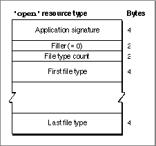

Legacy Document
Important: The information in this document is obsolete and should not be used for new development.
Important: The information in this document is obsolete and should not be used for new development.


The Open Resource
To make your application compatible with the Translation Manager, you should add an open resource to your application's resource file. This resource, of type'open', indicates which types of files your application can open. Figure 7-11 shows the format of a compiled open resource.Figure 7-11 Structure of a compiled open (
'open') resource An open resource consists of your application's signature and a list of file types. The Finder allows the user to launch your application by dropping documents of any of those types on your application's icon. In addition, if any translation extensions are installed, all documents that can be translated into one of those file types can also be dropped onto your application's icon. Your application's open resource having resource ID 128 is used by the Standard File Package routine
StandardOpenDialogto determine the file types displayed in the standard file-opening dialog box.
Because your application's signature is included in the open resource, the resource
- IMPORTANT
- The file types in the open resource should be ordered by preference. If the Translation Manager has to choose between multiple file types as the destination file type for a translation, it chooses the file type that occurs earliest in the list.

can be in some file other than the application's resource fork. However, an open
resource located in an application's resource fork overrides any open resource for
that application located elsewhere. It also overrides the openable file types as listed in the application's'FREF'resource.See Listing 7-2 on page 7-13 for a sample open resource.